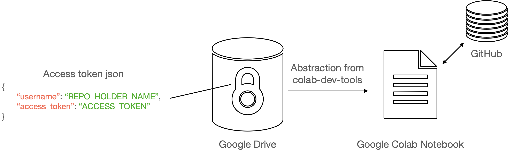

Google Colab
Contents
Google Colab¶
Colab is a great tools for Deep Learning, as it comes with a GPU free for use. This makes it excellent for testing training and inference loops before using a cluster compute service.
Making the best use of the GPU¶
content being worked on…
Working with GitHub¶
content is being worked on
Working with Private Packages¶
One of the disadvantages that comes with Google Colab, as compared with Jupyter Notebooks, is that you can’t install a custom kernel. This means that you need to install all the packages you need every single time. For most cases, this isn’t a particular issue and is only a minor inconvenience. All you need to do is to use pip install within the notebook:
!pip install package
However, all this fails if you are working with private packages. That is, a package that you are developing on a private repository. This is because pip no longer works as you need authentication. Without it, this meant only 2 ways of running private code on Colab:
1) Copy paste all the code into Colab: This only works for small projects (e.g. with 1 or 2 small files). It is NOT recommended because it makes the notebook long and messy; It makes versioning really difficult; and almost any change will require a complete refactoring of the base code.
2) Zip the package and unzip on Colab: While this works great for a single user, it becomes very difficult to maintain when working in a team. The zip file can get easily misplaced, misnamed, and versioning is almost impossible. This makes it difficult to reproduce results and debug code should something go wrong.
Since both methods are inadequate, one must consider authenticating GitHub. However this is no longer a trivial task since their decision to require token authentication[1], effectively preventing users from being able to use password authentication. This leaves only two authentication methods: ssh and auth-token. The former is a pain if using Colab, since you need to add the key to the Colab session each time. The auth-token method is better, but it also requires copy pasting. This can be problematic because:
You risk exposing the key each time you copy paste it
You risk leaving it in the notebook and thus exposing it on Notebook push
It is just annoying…
The solution I propose is to therefore store the access token on your personal drive, and then read it from there each time, but make sure that the reading is abstracted away by some code. This way, you never explicitly read it, thus removing risk 2). You also never need to copy paste anything, thus removing 1). Finally, the process is very streamlined so you can be sure you won’t get frustrated by 3). This is shown in the diagram below.

Solution¶
# install the package
!pip install colab-dev-tools
# imports
import os
from colabtools.utils import mount_drive, install_private_library
# get path to Drive root, e.g. drive/MyDrive/
drive_path = mount_drive()
# get path to the access token
git_access_token_json_path = os.path.join(drive_path, PATH_TO_JSON)
# install using pip install git+https://{access_token}@github.com/{username}/{repo_name}.git
install_private_library(git_access_token_json_path, PROJECT_NAME)
Other Considerations¶
Make sure your drive is only accessible to you; this decreases the chances of your access token getting leaked.
Note that the functions in the package only abstract away the code. They don’t encrypt your access token key in any away.
One disadvantage this method has is that the path to your Access Token will be visible in the Notebook. This means that if an attacker does get access to your drive, they will be able to easily locate your Access Token json. As such, it might be a good idea to remove the path each time you push your notebook to Github.
A note on Colab Pro and Colab Pro+¶
References¶
[1] Langlois M. (2020). Token authentication requirements for Git operations. URL: https://github.blog/2020-12-15-token-authentication-requirements-for-git-operations/